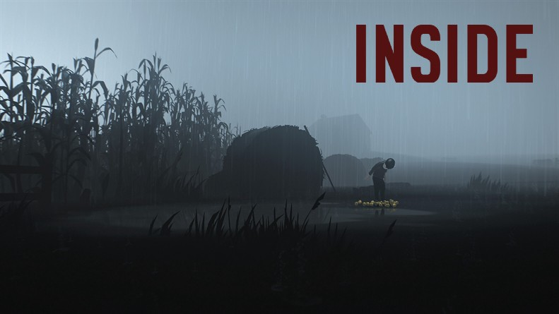

He jumps. He lands on the ground with a hard thud. The dirt around his feet wisp upward in a cloudy dance. Without hesitation he crouches forward leaving his size 6 footprints trailing behind. He wears a muted red long sleeved shirt and black pants that fit snug on his thin frame. It is dark and the 2 AM moonlight pierces through the forest ceiling, sporadically illuminating his surroundings.
Moments later, he ducks behind a tree. A horizontal beam of light bounces up and down towards a fallen cylindrical shelter to his left. The shelter is made of some sort of metal and has a singular circular window. He takes a peek at the source of the beam and sees two men searching. They scan ferociously but he can't make out their faces. From what he can sense, the two have malicious intent. He has to be silent. They walk by and he marches on. As he moves forward he notices occasional metal buildings designed similarly to the fallen shelter, evoking an eerie authoritarian presence in the woods. He stops at a concrete wall a head taller than him, built to stop children just a head shorter than him. On the other side is road. He reaches for the top of the wall with his hands. His fingers press against the hard concrete, becoming white as blood rushes away from his capillaries.
He sees more men on the other side. They have dogs. One senses him. He immediately dashes towards the cliff side as their barks become deafening shockwaves to his entire body. The silence is shattered - the illusion of serenity breaks into a thousand glass shards. Up ahead is a massive ridge, the depth indeterminate and the other side safety. He runs as hard as he can, his legs oscillating faster than his mind can process.
As he jumps and leaves the dogs biting into empty air in his wake, his mind briefly processes for a split second the thought of the potential consequences of not reaching the other side…
...
This is the beginning of Playdead's Inside. http://www.playdead.com/games/inside/
I finished the game recently. And I cannot stop thinking about it.
I believe more people need to play this game. Developed by Danish studio Playdead, it is the story of a boy running for his life. The best part of Inside is that the world is presented in a way only video games can. The audience controls how much story they want to absorb.
Inside is special in particular because it tells a story without any direct narration. There are no on-screen prompts and no tutorial. In addition, the controls are dead simple - you have three inputs: a directional joystick, a jump button, and an interact button. By introducing subtle nuances and shifts in the environment, the game makes it easy for you to map each input to the actions your character needs to perform in order to progress.
On top of the stunning art direction, everything in the game is beautifully animated. The way the boy contextually changes from walking, crouching and running depending on your situation is fluid. The way the boy starts to pant and breathe heavily if you have kept him running a long time feels relatable. The way the boy braces himself for impact as he leaps from ledges and rolls onto his shoulder is tense and stressful. Each frame has been meticulously crafted over the course of four years of development with incredible passion and detail.
Inside is a shining example of how video games have matured and progressed as a medium. If anyone asks if games can be art - I will show them this, and then some.
...
P.S Skip the trailer and go into this game blind. You won't regret it - trust me.